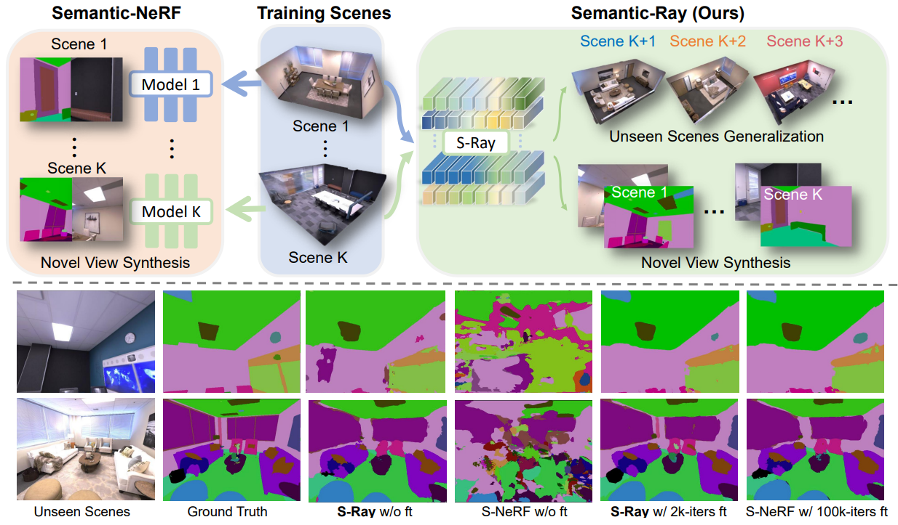
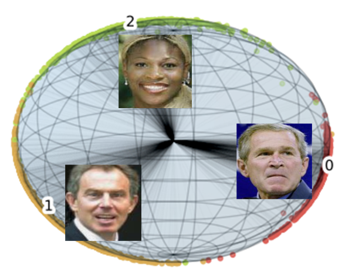

|
Yueqi DuanTenure-track Assistant ProfessorDepartment of Electronic Engineering, Tsinghua University Email: duanyueqi at tsinghua.edu.cn CV • Google Scholar • GitHub |
About Me
- I am a tenure-track assistant professor at the Department of Electronic Engineering of Tsinghua University.
- From 2019 to 2021, I was a postdoctoral researcher at the Computer Science Department of Stanford University, working under Prof. Leonidas J. Guibas.
- I received my Ph.D. degree at the Department of Automation of Tsinghua University in 2019, advised by Prof. Jie Zhou and Prof. Jiwen Lu.
- My research is on computer vision and pattern recognition, particularly 3D vision, deep learning and metric learning.
Updates
- [2023/02/28] 2 papers are accepted by CVPR'23!
- [2022/07/09] 1 paper is accepted by ECCV'22!
- [2022/07/01] 1 paper is accepted by TIP'22!
- [2022/03/23] 1 paper is accepted by TPAMI'22!
- [2022/03/01] 3 papers are accepted by CVPR'22!
- [2022/01/21] 1 paper is accepted by ICLR'22!
Selected Publications
|  | Fangfu Liu, Chubin Zhang, Yu Zheng, and Yueqi Duan Semantic Ray: Learning a Generalizable Semantic Field with Cross-Reprojection Attention. IEEE/CVF Conference on Computer Vision and Pattern Recognition (CVPR), 2023, accepted. [PDF][Code] |
 |
Muheng Li, Yueqi Duan, Jie Zhou, and Jiwen Lu Diffusion-SDF: Text-to-Shape via Voxelized Diffusion. IEEE/CVF Conference on Computer Vision and Pattern Recognition (CVPR), 2023, accepted. [PDF][Code] |
| Ziwei Wang, Han Xiao, Yueqi Duan, Jie Zhou and Jiwen Lu Learning Deep Binary Descriptors via Bitwise Interaction Mining. IEEE Transactions on Pattern Analysis and Machine Intelligence (TPAMI), 2022, accepted. [PDF] |
|
| An Tao, Yueqi Duan, Yi Wei, Jiwen Lu, and Jie Zhou SegGroup: Seg-Level Supervision for 3D Instance and Semantic Segmentation. IEEE Transactions on Image Processing (TIP), vol. 31, pp. 4952-4965, 2022. [PDF][Code] |
|
| Shuai Shen, Wanhua Li, Zheng Zhu, Yueqi Duan, Jie Zhou, and Jiwen Lu Learning Dynamic Facial Radiance Fields for Few-Shot Talking Head Synthesis. European Conference on Computer Vision (ECCV), 2022, accepted. [PDF][Code] |
|
| Yu Zheng, Yueqi Duan, Jiwen Lu, Jie Zhou, and Qi Tian HyperDet3D: Learning a Scene-conditioned 3D Object Detector. IEEE/CVF Conference on Computer Vision and Pattern Recognition (CVPR), pp. 5585-5594, 2022. (Oral). [PDF] |
|
| Muheng Li, Lei Chen, Yueqi Duan, Zhilan Hu, Jianjiang Feng, Jie Zhou, and Jiwen Lu Bridge-Prompt: Towards Ordinal Action Understanding in Instructional Videos. IEEE/CVF Conference on Computer Vision and Pattern Recognition (CVPR), pp. 19880-19889, 2022. [PDF][Code] |
|
 |
Suchen Wang, Yueqi Duan, Henghui Ding, Yap-Peng Tan, Kim-Hui Yap, and Junsong Yuan Learning Transferable Human-Object Interaction Detector with Natural Language Supervision. IEEE/CVF Conference on Computer Vision and Pattern Recognition (CVPR), pp. 939-948, 2022. [PDF][Code] |
| Chuanyu Pan, Yanchao Yang, Kaichun Mo, Yueqi Duan, and Leonidas J. Guibas Object Pursuit: Building a Space of Objects via Discriminative Weight Generation. International Conference on Learning Representations (ICLR), 2022, accepted. [PDF] |
|
| Congyue Deng, Or Litany, Yueqi Duan, Adrien Poulenard, Andrea Tagliasacchi, and Leonidas J. Guibas Vector Neurons: A General Framework for SO(3)-Equivariant Networks. IEEE International Conference on Computer Vision (ICCV), pp. 12200-12209, 2021. (Oral). [PDF][Code] |
|
| Yijia Weng, He Wang, Qiang Zhou, Yuzhe Qin, Yueqi Duan, Qingnan Fan, Baoquan Chen, Hao Su, and Leonidas J. Guibas CAPTRA: CAtegory-level Pose Tracking for Rigid and Articulated Objects from Point Clouds. IEEE International Conference on Computer Vision (ICCV), pp. 13209-13218, 2021. (Oral). [PDF][Code] |
|
 |
Ziyi Wu*, Yueqi Duan*, He Wang, Qingnan Fan, and Leonidas J. Guibas IF-Defense: 3D Adversarial Point Cloud Defense via Implicit Function based Restoration. arXiv, 2021. [PDF][Code] |
| Yueqi Duan, Jiwen Lu, Wenzhao Zheng, and Jie Zhou Deep Adversarial Metric Learning. IEEE Transactions on Image Processing (TIP), vol. 29, pp. 2037-2051, 2020. [PDF] |
|
 |
Yueqi Duan*, Haidong Zhu*, He Wang, Li Yi, Ram Nevatia, and Leonidas J. Guibas Curriculum DeepSDF. European Conference on Computer Vision (ECCV), pp. 51-67, 2020. [PDF][Code] |
| Wanhua Li, Yueqi Duan, Jiwen Lu, Jianjiang Feng, and Jie Zhou Graph-Based Social Relation Reasoning. European Conference on Computer Vision (ECCV), pp. 18-34, 2020. [PDF] |
|
| Yueqi Duan, Jiwen Lu, Ziwei Wang, Jianjiang Feng, and Jie Zhou Learning Deep Binary Descriptor with Multi-Quantization. IEEE Transactions on Pattern Analysis and Machine Intelligence (TPAMI), vol. 41, no. 8, pp. 1139-1153, 2019. [PDF] |
|
| Yueqi Duan, Yu Zheng, Jiwen Lu, Jie Zhou, and Qi Tian Structural Relational Reasoning of Point Clouds. IEEE/CVF Conference on Computer Vision and Pattern Recognition (CVPR), pp. 949-958, 2019. [PDF][Code] |
|
|  | Yueqi Duan, Jiwen Lu, and Jie Zhou UniformFace: Learning Deep Equidistributed Representation for Face Recognition. IEEE/CVF Conference on Computer Vision and Pattern Recognition (CVPR), pp. 3415-3424, 2019. [PDF] |
| Yueqi Duan, Lei Chen, Jiwen Lu, and Jie Zhou Deep Embedding Learning with Discriminative Sampling Policy. IEEE/CVF Conference on Computer Vision and Pattern Recognition (CVPR), pp. 4964-4973, 2019. [PDF] |
|
| Yueqi Duan, Jiwen Lu, Jianjiang Feng, and Jie Zhou Context-Aware Local Binary Feature Learning for Face Recognition. IEEE Transactions on Pattern Analysis and Machine Intelligence (TPAMI), vol. 40, no. 5, pp. 1139-1153, 2018. [PDF][Code] |
|
| Yueqi Duan, Jiwen Lu, Jianjiang Feng, and Jie Zhou Deep Localized Metric Learning. IEEE Transactions on Circuits and Systems for Video Technology (TCSVT), vol. 28, no. 10, pp. 2644-2656, 2018. [PDF] |
|
| Yueqi Duan, Jiwen Lu, Jianjiang Feng, and Jie Zhou Topology-Preserving Structural Matching for Automatic Partial Face Recognition. IEEE Transactions on Information Forensics and Security (TIFS), vol. 13, no. 7, pp. 1823-1837, 2018. [PDF] |
|
 |
Yueqi Duan, Wenzhao Zheng, Xudong Lin, Jiwen Lu, and Jie Zhou Deep Adversarial Metric Learning. IEEE/CVF Conference on Computer Vision and Pattern Recognition (CVPR), pp. 2780-2789, 2018. (Spotlight). [PDF][Slides][Poster] |
 |
Yueqi Duan, Ziwei Wang, Jiwen Lu, Xudong Lin, and Jie Zhou GraphBit: Bitwise Interaction Mining via Deep Reinforcement Learning. IEEE/CVF Conference on Computer Vision and Pattern Recognition (CVPR), pp. 8270-8279, 2018. [PDF][Poster][Code] |
| Xudong Lin, Yueqi Duan, Qiyuan Dong, Jiwen Lu, and Jie Zhou Deep Variational Metric Learning. European Conference on Computer Vision (ECCV), pp. 689-704, 2018. [PDF] |
|
| Yueqi Duan, Jiwen Lu, Jianjiang Feng, and Jie Zhou Learning Rotation-Invariant Local Binary Descriptor. IEEE Transactions on Image Processing (TIP), vol. 26, no. 8, pp. 3636-3651, 2017. [PDF] |
|
 |
Yueqi Duan, Jiwen Lu, Ziwei Wang, Jianjiang Feng, and Jie Zhou Learning Deep Binary Descriptor with Multi-Quantization. IEEE/CVF Conference on Computer Vision and Pattern Recognition (CVPR), pp. 4857-4866, 2017. [PDF][Poster] |
| Yueqi Duan, Jiwen Lu, Jianjiang Feng, and Jie Zhou Topology Preserving Graph Matching for Partial Face Recognition. IEEE International Conference on Multimedia and Expo (ICME), pp. 1494-1499, 2017. (Oral). [PDF][Slides] |
Professional Activities
- Area Chair, IEEE International Conference on Multimedia and Expo, 2020-2022.
- Reviewer, IEEE Transactions on Pattern Analysis and Machine Intelligence.
- Reviewer, International Journal of Computer Vision.
- Reviewer, IEEE Transactions on Image Processing.
- Reviewer, IEEE Transactions on Circuits and Systems for Video Technology.
- Reviewer, IEEE Transactions on Information Forensics and Security.
- Reviewer, IEEE/CVF Conference on Computer Vision and Pattern Recognition.
- Reviewer, IEEE International Conference on Computer Vision.
- Reviewer, European Conference on Computer Vision.
- Reviewer, International Conference on Machine Learning.
- Reviewer, Neural Information Processing Systems.
- Reviewer, ACM SIGGRAPH.
- Reviewer, AAAI Conference on Aritficial Intelligence
Honors
- Excellent Doctoral Dissertation of Chinese Association for Artificial Intelligence, 2020.
- Excellent Ph.D. Graduate of Beijing and Tsinghua University, 2019.
- Excellent Doctoral Dissertation of Tsinghua University, 2019.
- National Scholarship, Tsinghua University, 2017, 2018.
- Outstanding Reviewer Award of ICME, 2018.
- Outstanding Scholar, Department of Automation, Tsinghua University, 2017.
- Deng Feng Academic Scholarship, Tsinghua University, 2017-2018.
- Scholarship of Social Practice, Tsinghua University, 2016.
- Champion of Volleyball in John Ma Competition, Tsinghua University, 2016.
- Champions of Chess in John Ma Competition, Tsinghua University, 2010-2013.
- Champion of ABAC Chess Competition in Mallorca, Spain, 2011.